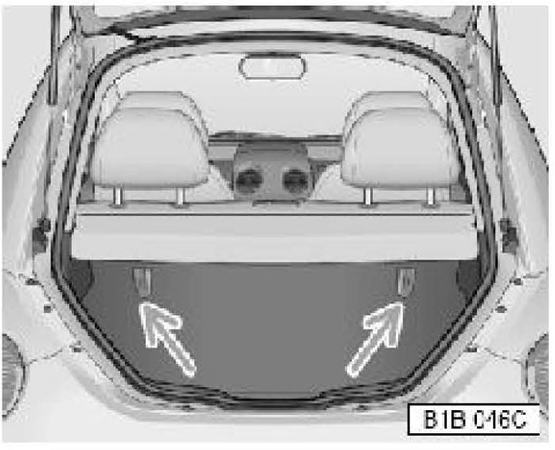
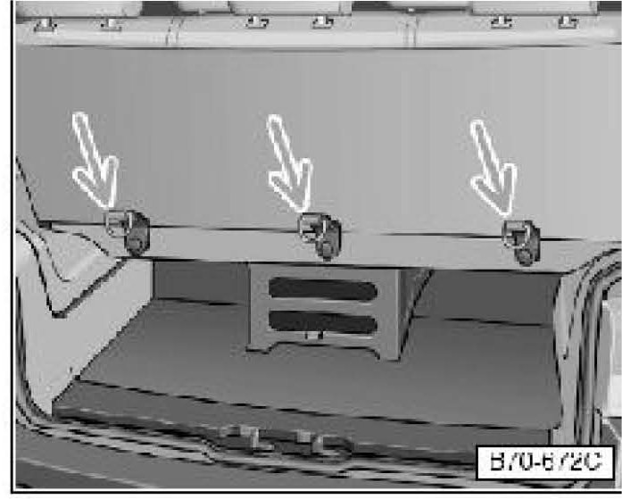
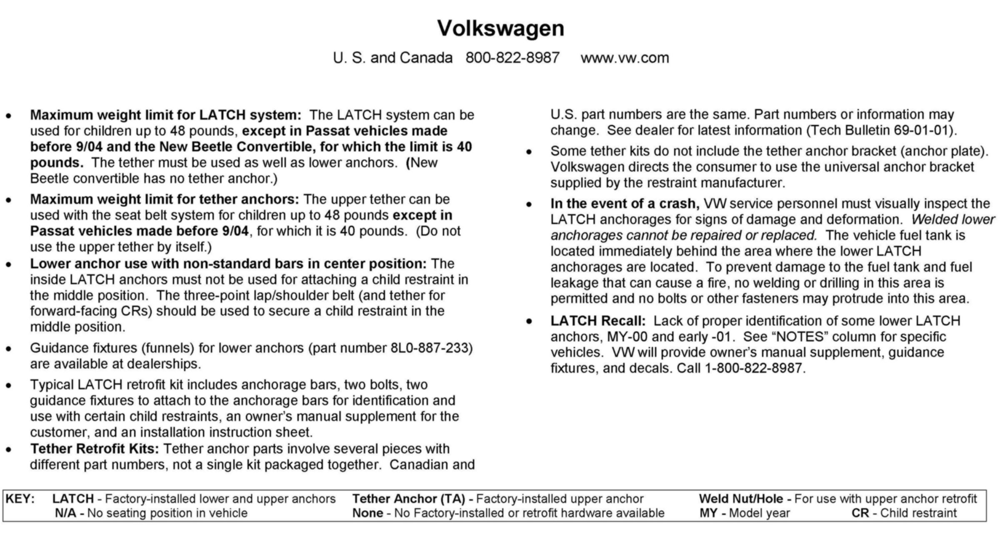
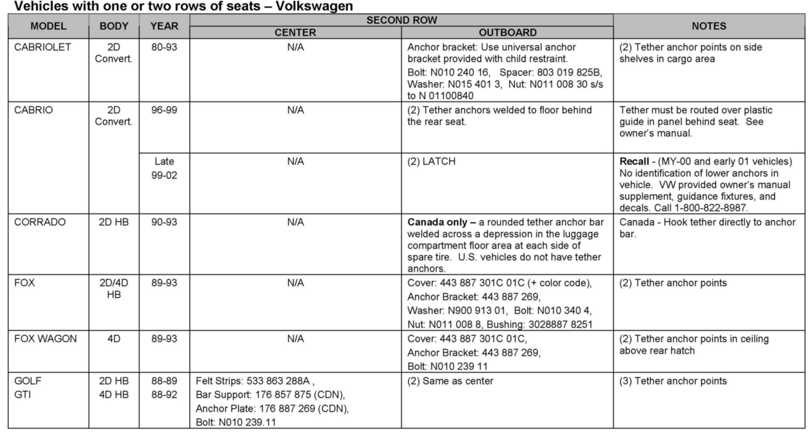

Restraints - LATCH(R) System Installation/Retrofitting
Condition
69 07 02
Feb. 22, 2007
2002309
Supersedes T.B. Group 69 number 05-01 dated January 4, 2005 due to change in warranty information.
LATCH System "Lower Anchors and Tethers for Children", Installing/Retrofitting
To comply with Federal regulations, all vehicles manufactured on or after September 1, 2002 must be equipped with LATCH ("Lower Anchors and Tethers for Children").
Technical Background
LATCH, definition
Generally called LATCH system for "Lower Anchors and Tethers for CHildren", consists of the combination of top tether anchors and lower anchors used to secure a "Child Restraint" (termed "top tether" and "lower universal anchorage" in Canada).
Child Restraint (will be abbreviated "CR" throughout the rest of this Technical Bulletin), is a term that refers to products generally called:
^ "Child safety seats"
^ "Convertible safety seats"
^ "Toddler safety seats"
^ "Infant safety seats"
^ "Booster safety seats" and the like
This Technical Bulletin will divide the LATCH system into three parts:
^ Top Tether anchors
^ Lower anchors
^ Model status
Top Tether anchors
Forward facing CR's manufactured after September 1, 1999, are required by US federal regulations to comply with more stringent child head movement performance requirements. These new performance requirements make a top tether necessary on most new CR's.
The purpose of the top tether is to reduce the forward movement of the CR in a crash, in order to help reduce the risk of head injury that could be caused by striking the vehicle interior.
A top tether anchor is used to connect the child restraint (CR) tether strap to the vehicle. A tether is a straight or V-shaped strap that attaches the top part of a CR to special anchorage points in the vehicle.

Illustration shows tether strap attached to anchor in a sedan model.

Illustration shows seat back with tether anchors for Passat Wagon and Golf models.
Tip:
Some Golf and Passat Wagon models may require a seat back change for tether anchor installation.

Illustration shows seat back with tether anchors for New Beetle.
Tip:
Convertible models are exempt from Top Tether installation requirements.
New Beetle Convertible has deployable head restraints.

Illustration shows tether anchors in luggage compartment for Cabrio.

Guide tether strap under rear seat head restraints through guide as shown, and route to tether anchors in luggage compartment of Cabrio.

Illustration shows tether anchors for the last row of seats in EuroVan models beginning with model year 2001.

Illustration shows tether anchors for EuroVan prior to model year 2001.

Lower anchors
All CR's manufactured after September 1, 2002 must have lower anchor attachments for the LATCH system. They must also continue to be capable of installation using the vehicle safety belts.
It is important to note that CR manufacturers began to provide such lower anchor attachments for the LATCH system in the year 2000 even before the required date.
Illustration shows location of lower anchors for the rear seat.
Lower anchors secure the CR in the seat without using the vehicle's safety belts. The anchors provide a secure and easy-to-use attachment and minimize the possibility of improper CR installation.
Lower anchor attachment points are located between the rear seat back and rear seat cushion for the outboard seating positions.
Tip:
EuroVan is not equipped with Lower anchors. EuroVan can not be retrofitted with Lower anchors.
Model Status - US
Top Tether anchors for rear seating positions:
^ Standard for all seating positions beginning m.y. 2000 (EuroVan Camper in m.y. 2001)
^ Can be retrofitted in earlier models Lower anchors in rear outboard seating positions:
^ Standard in Cabrio, New Beetle, New Golf and New Jetta beginning m.y. 1999
^ Can be retrofitted in Passat models beginning m.y. 1999 to m.y. 2002
Model Status - Canada
Top Tether anchors for rear seating positions:
^ At least one anchor provided for passenger vehicles beginning m.y. 1989
^ Standard for all seating positions beginning m.y. 2000 (EuroVan Camper in m.y. 2001)
^ Additional positions can be retrofitted
Lower anchors in rear outboard seating positions:
^ Standard factory installed in Cabrio, New Beetle, New Golf and New Jetta beginning m.y. 1999
^ Can be retrofitted in Passat models beginning m.y. 1999 to m.y. 2002
Production Solution
See Latch Information, page 1 of attachment.
Service
LATCH, retrofitting previous models
Top Tether anchors
For most models:
A Top Tether anchor retrofit parts listing is attached (for installation instructions see comment section in listing).
Lower anchors
For Passat models ONLY:
A lower anchor retrofit kit part number listing is attached. Each kit includes:
1. LATCH Owner's manual supplement for user instructions (to be given to customer).
2. 1 anchor bar, 2 bolts.
3. Two guidance fixtures (for identification and use with certain child restraints).
4. Installation instructions.
Tip:
Whenever a lower anchor retrofit is installed in a Passat, the tether anchor MUST also be installed, if not already present in the vehicle.
The guidance fixtures MUST be installed on the lower anchor bars when the vehicle is delivered to the customer.
The LATCH owner's manual supplement in the kit MUST be given to the customer when the vehicle is delivered.
WARNING
Always remind the owner to read and follow the owner's manual and LATCH supplement instructions and warnings.
Tip:
Part number(s) are for reference only. Always see ETKA for the latest part(s) information.
Warranty
Information only.
Required Parts and Tools




For Required Parts see Latch, Tether and Anchor Information in attachment. No Special Tools required.